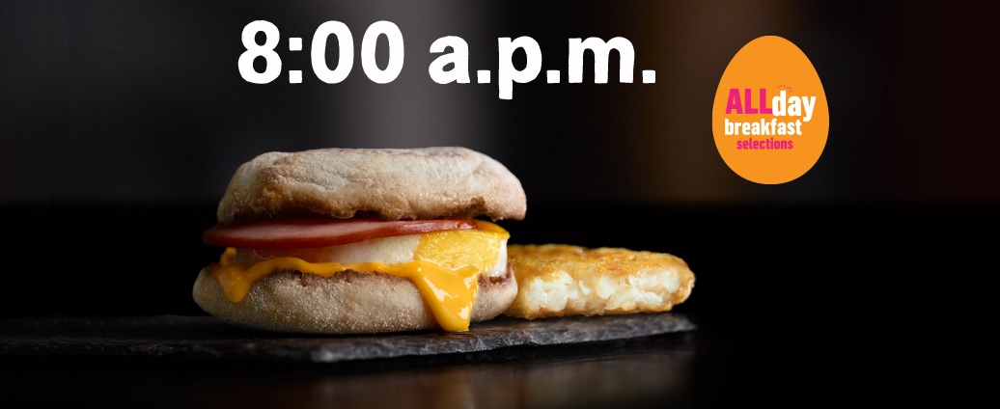

Data Ethics and the Launch of McDonald's All Day Breakfast
As an aspiring data scientist, it's important to help increase general data literacy. I examine the principles of the Belmont Report (Beneficience, Justice, and Respect for Persons) using a interesting toy example of McDonald's All Day Breakfast and provide an introductory lesson into the basics of ethics.
Published May 28th, 2021